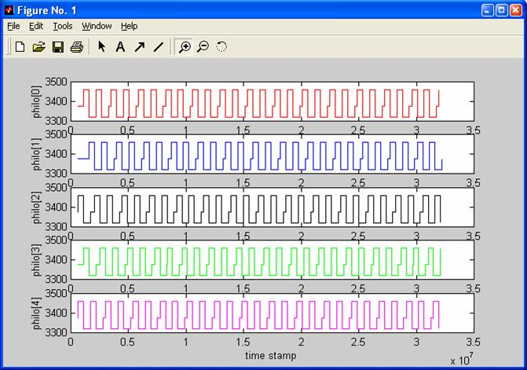
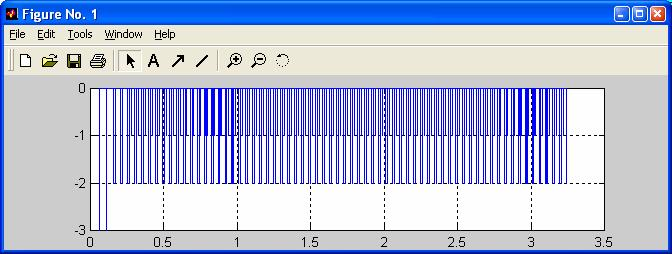
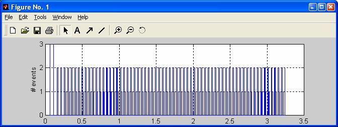
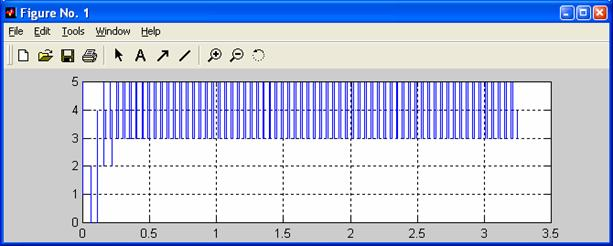
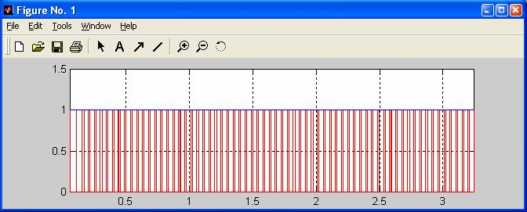

QTools
7.4.0
Collection of Host-Based Tools
The QSPY host application can also export trace data to MATLAB®, which is a popular numerical computing environment and a high-level technical programming language. Created by The MathWorks, Inc., MATLAB allows easy manipulation and plotting of data represented as matrices.
The following sections provide a reference manual for all 11 of the MATLAB matrices generated by the qspy.m script. By MATLAB convention, the different variables are put into columns, allowing observations to vary down through the rows. Therefore, a data set consisting of twenty-four time samples of six variables is stored in a matrix of size 24-by-6. The pound sign '#' in a given cell of the matrix represents data available from the target. Other values represent data added by the qspy.m script to allow unambiguous identification of the trace records.
The N-by-6 Q_STATE matrix stores all QS records generated by the QEP hierarchical event processor and pertaining to all the state machines in the system. The following table summarizes how the QS records are stored in the matrix:
| MATLAB index –> | 1 | 2 | 3 | 4 | 5 | 6 |
|---|---|---|---|---|---|---|
| QS Record | Time Stamp | Signal | State Machine Object | Source State | New State | Event Handler |
| QS_QEP_STATE_ENTRY | NaN | 1 | #(2) | # | NaN | 1 |
| QS_QEP_STATE_EXIT | NaN | 2 | #(2) | # | NaN | 1 |
| QS_QEP_STATE_INIT | NaN | 3 | # | # | # | 1 |
| QS_QEP_INIT_TRAN | # | 3 | #(2) | NaN | # | 1 |
| QS_QEP_INTERN_TRAN | # | #(1) | #(2) | # | NaN | 1 |
| QS_QEP_TRAN | # | #(1) | #(2) | # | # | 1 |
| QS_QEP_IGNORED | # | #(1) | #(2) | # | NaN | 0 |
| QS_QEP_DISPATCH | # | #(1) | #(2) | # | NaN | 0 |
| QS_QEP_UNHANDLED | NaN | #(1) | #(2) | # | NaN | 0 |
(1) The valid USER signal is > 3
(2) Per inheritance, an active object is a state machine object as well
The following criteria (index matrices in MATLAB) unambiguously select the QS records from the Q_STATE matrix:
| QS Record | MATLAB Matrix Index |
|---|---|
| QS_QEP_STATE_ENTRY | Q_STATE(:,2) == 1 |
| QS_QEP_STATE_EXIT | Q_STATE(:,2) == 2 |
| QS_QEP_STATE_INIT | Q_STATE(:,2) == 3 |
| QS_QEP_INIT_TRAN | isnan(Q_STATE(:,4)) |
| QS_QEP_INTERN_TRAN | Q_STATE(:,2) > 3 & isnan(Q_STATE(:,5)) |
| QS_QEP_TRAN | Q_STATE(:,2) > > & ~isnan(Q_STATE(:,5)) |
| QS_QEP_IGNORED | ~Q_STATE(:,6) |
For example, the following MATLAB plot shows the timing diagrams for all Philo state machines in the DPP example application made by the philo_timing.m script located in the directory qtools/qspy/matlab (see Section qspy_files). The vertical axis represents states "thinking" (lowest), "hungry" (middle), and "eating" (top).

The N-by-5 Q_ACTIVE matrix stores QS records pertaining to adding/removing active objects and subscribing to/unsubscribing from events from active objects. The following table summarizes how the QS records are stored in the matrix:
| MATLAB index –> | 1 | 2 | 3 | 4 | 5 |
|---|---|---|---|---|---|
| QS Record | Time Stamp | Signal | Active Object | QF Priority | Delta |
| QS_QF_ACTIVE_SUBSCRIBE | # | # | # | NaN | +1 |
| QS_QF_ACTIVE_UNSUBSCRIBE | # | # | # | NaN | -1 |
The following criteria (index matrices in MATLAB) unambiguously select the QS records from the Q_ACTIVE matrix:
| QS Record | MATLAB Matrix Index |
|---|---|
| QS_QF_ACTIVE_SUBSCRIBE | isnan(Q_ACTIVE(:,4)) & Q_ACTIVE(:,5) > 0 |
| QS_QF_ACTIVE_UNSUBSCRIBE | isnan(Q_ACTIVE(:,4)) & Q_ACTIVE(:,5) < 0 |
The N-by-10 Q_EQUEUE matrix stores QS records pertaining to queuing events in the QF. Both the active object event queues and the "raw" thread-safe queues are included. The 'nUsed' field denotes the current number of used entries in the queue. The 'Maximum nUsed' field denotes the maximum number of used entries since initialization (high watermark). Both fields contain the number of used entries in the queue's ring-buffer plus one, to account for the extra location at the front of the queue. The following table summarizes how the QS records are stored in the matrix:
| MATLAB index –> | 1 | 2 | 3 | 4 | 5 | 6 | 7 | 8 | 9 | 10 |
|---|---|---|---|---|---|---|---|---|---|---|
| QS Record | Time Stamp | Sender | Event Queue (1) | nFree | Minimum Used | Signal | Pool ID | Ref. Count | LIFO | Delta |
| QS_QF_ACTIVE_POST | # | # | # | # | # | # | # | # | 0 | +1 |
| QS_QF_ACTIVE_POST_LIFO | # | # | # | # | # | # | # | # | 1 | +1 |
| QS_QF_ACTIVE_GET | # | NaN | # | # | NaN | # | # | # | 0 | -1 |
| QS_QF_ACTIVE_GET_LAST | # | NaN | # | NaN | NaN | # | # | # | 0 | -1 |
| QS_QF_EQUEUE_POST | # | NaN | # | # | # | # | 1 | # | 0 | +1 |
| QS_QF_EQUEUE_POST_LIFO | # | NaN | # | # | # | # | # | # | 1 | +1 |
| QS_QF_EQUEUE_GET | # | NaN | # | # | # | # | # | # | 0 | -1 |
| QS_QF_EQUEUE_GET_LAST | # | NaN | # | NaN | NaN | # | # | # | 0 | -1 |
(1) This field (index 3) is actually the pointer to the ring buffer of the queue.
The following criteria (index matrices in MATLAB) unambiguously select the QS records from the Q_EQUEUE matrix:
| QS Record | MATLAB Matrix Index |
|---|---|
| QS_QF_ACTIVE_POST | Q_EQUEUE(:,3) == <active obj> & ~Q_EQUEUE(:,9) & Q_EQUEUE(:,10) > 0 |
| QS_QF_ACTIVE_POST_LIFO | Q_EQUEUE(:,3) == <active obj> & Q_EQUEUE(:,9) & Q_EQUEUE(:,10) > 0 |
| QS_QF_ACTIVE_GET | Q_EQUEUE(:,3) == <active obj> & ~isnan(Q_EQUEUE(:,4) & Q_EQUEUE(:,10) < 0 |
| QS_QF_ACTIVE_GET_LAST | Q_EQUEUE(:,3) == <active obj> & isnan(Q_EQUEUE(:,4) & Q_EQUEUE(:,10) < 0 |
| QS_QF_EQUEUE_POST | Q_EQUEUE(:,3) == <raw queue> & ~Q_EQUEUE(:,9) & Q_EQUEUE(:,10) > 0 |
| QS_QF_EQUEUE_POST_LIFO | Q_EQUEUE(:,3) == <raw queue> & Q_EQUEUE(:,9) & Q_EQUEUE(:,10) > 0 |
| QS_QF_EQUEUE_GET | Q_EQUEUE(:,3) == <raw queue> & ~isnan(Q_EQUEUE(:,4) & Q_EQUEUE(:,10) < 0 |
| QS_QF_EQUEUE_GET_LAST | Q_EQUEUE(:,3) == <raw queue> & isnan(Q_EQUEUE(:,4) & Q_EQUEUE(:,10) < 0 |
The N-by-5 Q_MPOOL matrix stores QS records pertaining to memory pools in the QF. The 'nFree' field denotes the current number of free blocks in the event pool. The 'Minimum nFree' field denotes the minimum number of free blocks since initialization (low watermark). The following table summarizes how the QS records are stored in the matrix:
| MATLAB index –> | 1 | 2 | 3 | 4 | 5 |
|---|---|---|---|---|---|
| QS Record | Time Stamp | Pool Object | nFree | Minimal nFree | Delta |
| QS_QF_MPOOL_GET | # | # | # | # | -1 |
| QS_QF_MPOOL_PUT | # | # | # | NaN | +1 |
The cumulative sum over the 'Delta' column should not have any long-time trends, because this would indicate a leak from the pool. The following picture shows the plot for the test data.

The following criteria (index matrices in MATLAB) unambiguously select the QS records from the Q_MPOOL matrix:
| QS Record | MATLAB Matrix Index |
|---|---|
| QS_QF_MPOOL_GET | Q_MPOOL(:,5) < 0 |
| QS_QF_MPOOL_PUT | Q_MPOOL(:,5) > 0 |
The N-by-6 Q_NEW matrix stores QS records pertaining to dynamic event allocation and automatic event recycling (garbage collection) in the QF. The following table summarizes how the QS records are stored in the matrix:
| MATLAB index –> | 1 | 2 | 3 | 4 | 5 | 6 |
|---|---|---|---|---|---|---|
| QS Record | Time Stamp | Signal | PoolID | Ref. Count | Event Size | Delta |
| QS_QF_NEW | # | # | NaN | NaN | # | +1 |
| QS_QF_GC_ATTEMPT | # | # | # | # | NaN | 0 |
| QS_QF_GC | # | # | # | NaN | NaN | -1 |
The cumulative sum over the 'Delta' column should not have any long-time trends, because this would indicate event leak. The following picture shows the plot for the test data.

The following criteria (index matrices in MATLAB) unambiguously select the QS records from the Q_NEW matrix:
| QS Record | MATLAB Matrix Index |
|---|---|
| QS_QF_NEW | Q_NEW(:,6) > 0 |
| QS_QF_GC_ATTEMPT | Q_NEW(:,6) == 0 |
| QS_QF_GC | Q_NEW(:,6) < 0 |
The N-by-7 Q_PUB matrix stores QS records pertaining to publishing events in QF. The following table summarizes how the QS records are stored in the matrix:
| MATLAB index –> | 1 | 2 | 3 | 4 | 5 | 6 | 7 |
|---|---|---|---|---|---|---|---|
| QS Record | Time Stamp | Sender | Signal | PoolID | Ref. Count | # Events Multicast | Delta |
| QS_QF_PUBLISH | # | # | # | # | # | # | # |
The following criteria (index matrices in MATLAB) unambiguously select the QS records from the Q_PUB matrix:
| QS Record | MATLAB Matrix Index |
|---|---|
| QS_QF_PUBLISH | Q_PUB(:,7) > 0 |
The N-by-7 Q_TIME matrix stores QS records pertaining to time events in QF. The following table summarizes how the QS records are stored in the matrix:
| MATLAB index –> | 1 | 2 | 3 | 4 | 5 | 6 | 7 |
|---|---|---|---|---|---|---|---|
| QS Record | Time Stamp | QTimeEvt Object | Signal | QActive Object | QTimeEvt Counter | QTimeEvt Interval | QTimeEvt Delta |
| QS_QF_TICK | NaN | NaN | NaN | NaN | #(1) | NaN | 0 |
| QS_QF_TIMEEVT_ARM | # | # | NaN | # | # | # | +1 |
| QS_QF_TIMEEVT_DISARM | # | # | NaN | # | # | # | -1 |
| QS_QF_TIMEEVT_AUTO_DISARM | NaN | # | NaN | # | NaN | NaN | -1 |
| QS_QF_TIMEEVT_DISARM_ATTEMPT | # | # | NaN | # | NaN | NaN | 0 |
| QS_QF_TIMEEVT_REARM | # | # | NaN | # | # | # | #(2) |
| QS_QF_TIMEEVT_POST | # | # | # | # | NaN | NaN | 0 |
(1) For QS_QF_TICK record this matrix element contains the Tick Counter.
(2) For QS_QF_TIMEEVT_REARM event this matrix element is 0 if the time event was disarmed and rearmed again, and 1 if the time event was only armed.
The cumulative sum over the 'Delta' column indicates the total number of armed time events at any given time. The following picture shows the plot for the test data:

The following criteria (index matrices in MATLAB) unambiguously select the QS records from the Q_TIME matrix:
| QS Record | MATLAB Matrix Index |
|---|---|
| QS_QF_TICK | isnan(Q_TIME(:,2)) |
| QS_QF_TIMEEVT_ARM | Q_TIME(:,7) > 0 |
| QS_QF_TIMEEVT_DISARM | ~isnan(Q_TIME(:,1)) & Q_TIME(:,7) < 0 |
| QS_QF_TIMEEVT_AUTO_DISARM | isnan(Q_TIME(:,1)) & Q_TIME(:,7) < 0 |
| QS_QF_TIMEEVT_DISARM_ATTEMPT | isnan(Q_TIME(:,3)) & isnan(Q_TIME(:,5)) & Q_TIME(:,7) == 0 |
| QS_QF_TIMEEVT_REARM | isnan(Q_TIME(:,3)) & ~isnan(Q_TIME(:,5)) |
| QS_QF_TIMEEVT_POST | ~isnan(Q_TIME(:,3)) & ~isnan(Q_TIME(:,4)) |
The N-by-3 Q_INT matrix stores QS records pertaining to interrupt disabling and enabling. The following table summarizes how the QS records are stored in the matrix:
| MATLAB index –> | 1 | 2 | 3 |
|---|---|---|---|
| QS Record | Time Stamp | Interrupt Nesting | Nesting Delta |
| QS_QF_INT_DISABLE<td># | # | +1 | |
| QS_QF_INT_ENABLE | # | # | -1 |
The cumulative sum over the 'Delta' column indicates interrupt lock nesting and should closely follow column 2.
The following criteria (index matrices in MATLAB) unambiguously select the QS records from the Q_INT matrix:
| QS Record | MATLAB Matrix Index |
|---|---|
| QS_QF_INT_DISABLE | Q_INT(:,3) > 0 |
| QS_QF_INT_ENABLE | Q_INT(:,3) < 0 |
The N-by-4 Q_ISR matrix stores QS records pertaining to interrupt entry and exit. The following table summarizes how the QS records are stored in the matrix:
| MATLAB index –> | 1 | 2 | 3 | 4 |
|---|---|---|---|---|
| QS Record | Time Stamp | Interrupt Nesting | ISR Priority | Nesting Delta |
| QS_QF_ISR_ENTRY | # | # | # | +1 |
| QS_QF_ISR_EXIT | # | # | # | -1 |
The cumulative sum over the 'Delta' column indicates interrupt nesting level and should closely follow column 2.
The following criteria (index matrices in MATLAB) unambiguously select the QS records from the Q_ISR matrix:
| QS Record | MATLAB Matrix Index |
|---|---|
| QS_QF_ISR_ENTRY | Q_ISR(:,4) > 0 |
| QS_QF_ISR_EXIT | Q_ISR(:,4) < 0 |
The N-by-4 Q_MUTEX matrix stores QS records pertaining to the priority-ceiling mutex activity in QK. The following table summarizes how the QS records are stored in the matrix:
| MATLAB index –> | 1 | 2 | 3 | 4 |
|---|---|---|---|---|
| QS Record | Time Stamp | Original Priority | Priority Ceiling | Nesting Delta |
| #QS_MUTEX_LOCK | # | # | # | +1 |
| #QS_MUTEX_UNLOCK | # | # | # | -1 |
The cumulative sum over the 'Delta' column indicates the QK scheduler lock nesting level.

The following criteria (index matrices in MATLAB) unambiguously select the QS records from the Q_ISR matrix:
| QS Record | MATLAB Matrix Index |
|---|---|
| #QS_MUTEX_LOCK | Q_MUTEX(:,4) > 0 |
| #QS_MUTEX_UNLOCK | Q_MUTEX(:,4) < 0 |
The N-by-3 Q_SCHED matrix stores QS records pertaining to scheduling the next task in QK. The following table summarizes how the QS records are stored in the matrix:
| MATLAB index –> | 1 | 2 | 3 |
|---|---|---|---|
| QS Record | Time Stamp | Preempted Priority | New Priority |
| QS_SCHED_NEXT | # | # | # |